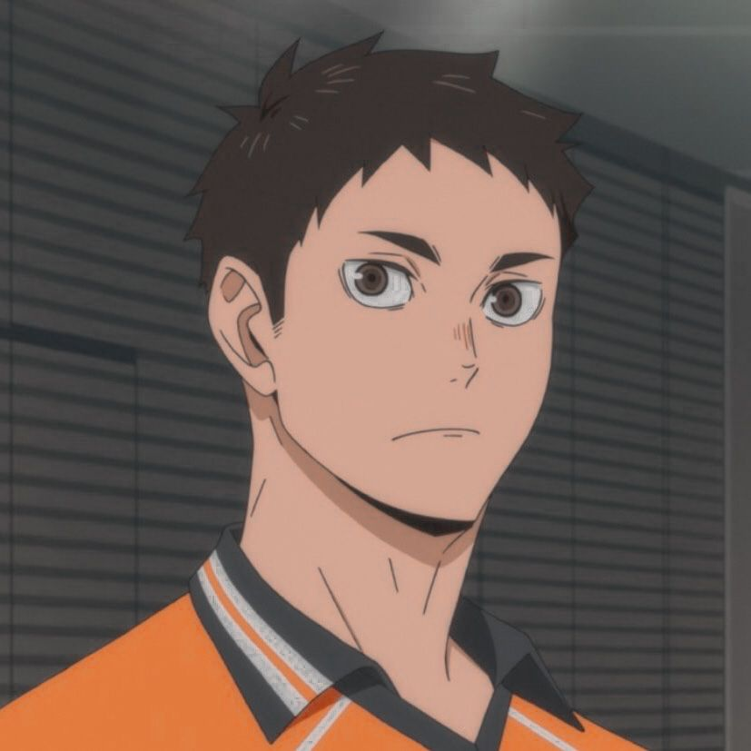

-
partidos de práctica
Hinata, Kageyama, Tanaka vs Tsukishima, Yamaguchi,
Sawamura (2:0 / 25-23, 25-21)Karasuno High School vs Aobajousai High School
(2:1 / 13-25, 25-22, 25-23)Karasuno High School vs Asociación de Vecinos de
+ Otros (0:2 / 19-25, 18-25)Karasuno High School vs Nekoma High School
(0:2 / 22-25, 23-25)Karasuno High School vs Nekoma High School
(0:2 / 22-25, 24-26)Karasuno High School vs Nekoma High School
(0:2 / 25-27, 30-32)Karasuno High School vs Ouginishi High School
(2:0 / 25-12 ,25-16)Karasuno High School vs Date Tech High School
(4:4 / 19-25, 23-25,S/i, 25-23, S/i, S/i, S/i, 25-21) -
campamento de verano
Varios sets contra Nekoma, Fukurōdani, Shinzen, y Ubugawa
(3 ganados, 63 perdidos)Karasuno High School vs Shinzen High School
(25-21)Karasuno High School vs Shinzen High School
(23-25)Karasuno High School vs Fukurōdani Academy
(12-25)Karasuno High School vs Fukurōdani Academy
(14-25)Karasuno High School vs Fukurōdani Academy
(22-25)Karasuno High School vs Fukurōdani Academy
(23-25)Karasuno High School vs Nekoma High School
(15-25)Karasuno High School vs Nekoma High School
(16-25)Karasuno High School vs Ubugawa High School
(16-25)Karasuno High School vs Ubugawa High School
(22-25)Karasuno High School vs Ubugawa High School
(23-25)campamento de verano
-
interhigh preliminares
Karasuno High School vs Tokonami High School
(2:0 / 25-12, 25-14)Karasuno High School vs Date Tech High School
(2:0 / 25-19, 25-22)Karasuno High School vs Aobajōsai High School
(1:2 / 15-25, 25-23, 31-33) -
Playoffs representativos de la prefectura Miyagi - Primavera
Karasuno High School vs Ougiminami High School
(2:0 / 25-16, 25-13)Karasuno High School vs Kakugawa High School
(2:0 / 25-22, 25-19)Karasuno High School vs Johzenji High School
(2:0 / 25-21, 25-20)Karasuno High School vs Wakutani South High School
(2:1/ 25-20, 20-25, 25-23)Karasuno High School vs Aobajōsai High School
(2:1 / 25-23 , 26-28, 26-24)Karasuno High School vs Shiratorizawa Academy
(3:2 / 16-25, 31-29, 20-25, 29-27, 21-19)Playoffs representativos de la
prefectura Miyagi - Primavera -
Torneo Nacional de Primavera - Tokio
Karasuno High School vs Tsubakihara Academy [Kanagawa]
(2:0 / 25-23, 25-23)Karasuno High School vs Inarizaki High School [Hyōgo]
(2:1 / 27-25, 16-25, 32-30)
retrato de jugadores
